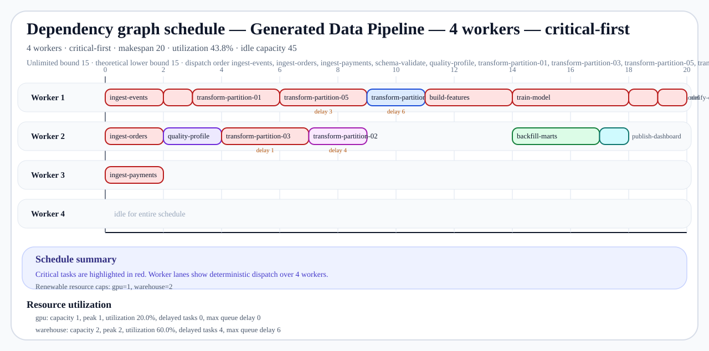

Dependency graph planner
Synthetic data pipeline (5 transform partitions) — dashboard
Airflow-style batch DAG with warehouse bottlenecks, feature building, GPU training, and downstream publishing tasks.
Browser-friendly landing page for the committed walkthrough artifacts. Start here when you want the dependency graph story, the constrained schedule evidence, and the export bundle links without opening raw JSON first.
projects/dependency-graph-planner/generated_data_pipeline.json
Critical path ingest-events → schema-validate → transform-partition-01 → build-features → train-model → publish-model → notify-ops
- 16Tasks
- 7Parallel layers
- 15Unlimited makespan
- ingest-events → schema-validate → transform-partition-01 → build-features → train-model → publish-model → notify-opsCritical path
- 4 workersWorker cap
- 20Constrained makespan
- critical-firstStrategy
- 43.8%Utilization
Artifact bundle
Stable, relative links make this dashboard safe to commit alongside the Markdown walkthrough and schedule exports.
- Markdown walkthrough
generated_data_pipeline_report.md - GitHub-friendly Mermaid preview
generated_data_pipeline_mermaid.md - Mermaid source
generated_data_pipeline.mmd - Graphviz DOT source
generated_data_pipeline.dot - Schedule SVG — 4 workers / critical-first
generated_data_pipeline_4_workers_schedule.svg - Schedule JSON — 4 workers / critical-first
generated_data_pipeline_4_workers_schedule.json
{kind=link}
Primary schedule preview
GitHub-friendly SVG timeline for the primary constrained schedule.

Schedule comparison snapshot
| Worker limit | Strategy | Makespan | Δ vs unlimited | Utilization | Delayed tasks | Artifacts |
|---|---|---|---|---|---|---|
| 4 workers | critical-first | 20 | 5 | 43.8% | 4 | SVG timeline · JSON payload |
Portfolio talking points
This project demonstrates deterministic DAG planning, critical-path timing, and realistic worker/resource bottlenecks in one small Python program. The linked Markdown walkthrough explains the reasoning, while the SVG timeline helps reviewers see the constrained schedule at a glance.